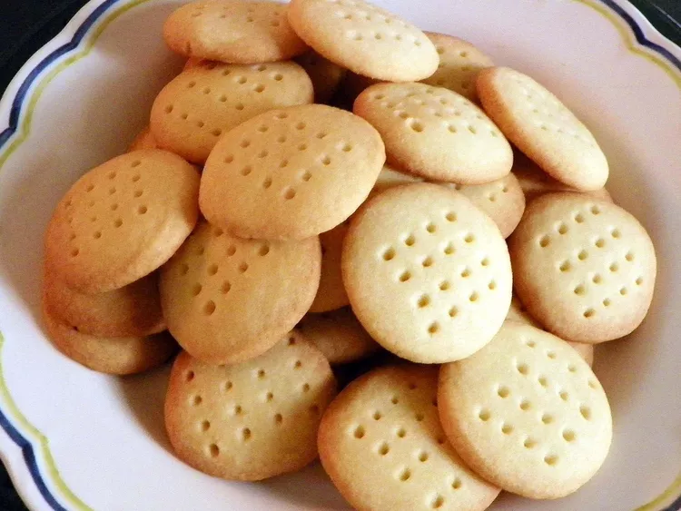

Simple Scottish Shortbread

Description
Light and very buttery.
The recipe does not make a large batch, but it's simple enough to make many batches.
The recipe does not double well.
Ingredients
- 1 1/2 cups all-purpose flour
- 1/3 cup white sugar
- 3/4 cup butter
Directions
- Preheat the oven to 350 degrees F (175 degrees C).
Butter a 9-inch square baking dish.
- Blend flour, sugar, and butter until well combined; dough will be stiff.
Press into the prepared dish and prick the top all over with a fork.
- Bake in the preheated oven until pale golden brown on the edges, 20 to 25 minutes.
Cool completely before cutting into squares.